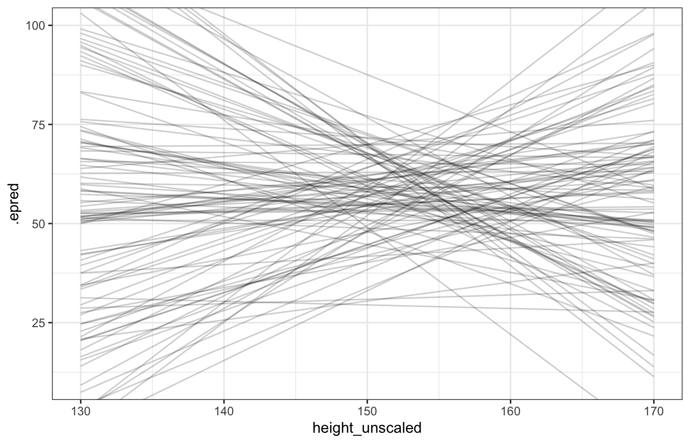

library(bayesrules)
library(tidyverse)
library(broom)
library(brms)
library(tidybayes)
library(ggdist)
library(patchwork)
# Plot stuff
clrs <- MetBrewer::met.brewer("Lakota", 6)
theme_set(theme_bw())
# Seed stuff
BAYES_SEED <- 1234
set.seed(1234)
# Data
data(Howell1, package = "rethinking")
d <- Howell1 %>%
filter(age > 18) %>%
mutate(height_z = scale(height))
height_scale <- attributes(d$height_z) %>%
set_names(janitor::make_clean_names(names(.)))Video #3 code
Geocentric models / linear regression
Linear regression
The general process for drawing the linear regression owl:
- Question/goal/estimand
- Scientific model
- Statistical model(s)
- Validate model
- Analyze data
1. Question/goal/estimand
We want to describe the association between adult weight and height
ggplot(d, aes(x = height, y = weight)) +
geom_point(color = clrs[3])
2. Scientific model
How does height influence weight?
Height has a causal relationship with weight:
\[ H \rightarrow W \]
Weight is a function of height. Plug in some value of height, get some weight:
\[ W = f(H) \]
We need to write down that model somehow. The normal \(y = mx + b\) way of writing a linear model looks like this, where \(\alpha\) is the intercept and \(\beta\) is the slope:
\[ y_i = \alpha + \beta x_i \]
We can also write it like this, where \(\mu\) is the expectation (\(E(y \mid x) = \mu\)), and \(\sigma\) is the standard deviation:
\[ \begin{aligned} y_i &\sim \mathcal{N}(\mu_i, \sigma) \\ \mu_i &= \alpha + \beta x_i \end{aligned} \]
So, we can think of a generative model for height causing weight like this:
\[ \begin{aligned} W_i &\sim \mathcal{N}(\mu_i, \sigma) \\ \mu_i &= \alpha + \beta H_i \end{aligned} \]
This can map directly to code:
set.seed(1234)
alpha <- 0
beta <- 0.5
sigma <- 5
n_individuals <- 100
fake_people <- tibble(height = runif(n_individuals, 130, 170),
mu = alpha + beta*height,
weight = rnorm(n_individuals, mu, sigma))
lm(weight ~ height, data = fake_people) %>%
tidy()
## # A tibble: 2 × 5
## term estimate std.error statistic p.value
## <chr> <dbl> <dbl> <dbl> <dbl>
## 1 (Intercept) 1.22 6.37 0.191 8.49e- 1
## 2 height 0.494 0.0431 11.5 7.64e-20
ggplot(fake_people, aes(x = height, y = weight)) +
geom_point() +
geom_smooth(method = "lm")3: Statistical model
Simulating and checking the priors
We don’t actually know \(\alpha\), \(\beta\), and \(\sigma\) - they all have priors and limits and bounds. For instance, \(\sigma\) is a scale parameter - it shifts distributions up and down - it has to be positive (hence the uniform distribution here). We can write a generic model like this:
\[ \begin{aligned} y_i &\sim \mathcal{N}(\mu_i, \sigma) \\ \mu_i &= \alpha + \beta x_i \\ \\ \alpha &\sim \mathcal{N}(0, 1) \\ \beta &\sim \mathcal{N}(0, 1) \\ \sigma &\sim \operatorname{Uniform}(0, 1) \end{aligned} \]
But if we sample from that prior distribution, we get lines that are all over the place!
set.seed(1234)
n_samples <- 10
tibble(alpha = rnorm(n_samples, 0, 1),
beta = rnorm(n_samples, 0, 1)) %>%
ggplot() +
geom_abline(aes(slope = beta, intercept = alpha)) +
xlim(c(-2, 2)) + ylim(c(-2, 2))Instead, we can set some more specific priors and rescale variables so that the intercept makes more sense.
\[ \begin{aligned} W_i &\sim \mathcal{N}(\mu_i, \sigma) \\ \mu_i &= \alpha + \beta (H_i - \bar{H}) \\ \\ \alpha &\sim \mathcal{N}(60, 10) \\ \beta &\sim \mathcal{N}(0, 10) \\ \sigma &\sim \operatorname{Uniform}(0, 10) \end{aligned} \]
Here’s what those priors look like:
plot_prior_alpha <- ggplot() +
stat_function(fun = ~dnorm(., 60, 10), geom = "area", fill = clrs[1]) +
xlim(c(30, 90)) +
labs(title = "Normal(60, 10)", subtitle = "Prior for intercept (α)", caption = "Average adult weight")
plot_prior_beta <- ggplot() +
stat_function(fun = ~dnorm(., 0, 10), geom = "area", fill = clrs[2]) +
xlim(c(-30, 30)) +
labs(title = "Normal(0, 10)", subtitle = "Prior for slope (β)", caption = "kg per cm")
plot_prior_sigma <- ggplot() +
stat_function(fun = ~dunif(., 0, 10), geom = "area", fill = clrs[3]) +
xlim(c(0, 10)) +
labs(title = "Uniform(0, 10)", subtitle = "Prior for sd (σ)")
plot_prior_alpha | plot_prior_beta | plot_prior_sigmapriors <- c(prior(normal(60, 10), class = Intercept),
prior(normal(0, 10), class = b),
prior(uniform(0, 10), class = sigma, lb = 0, ub = 10))
priors %>%
parse_dist() %>%
ggplot(aes(y = 0, dist = .dist, args = .args, fill = prior)) +
stat_slab() +
scale_fill_manual(values = clrs[1:3]) +
facet_wrap(vars(prior), scales = "free")Let’s see how well those priors work!
set.seed(1234)
n <- 100
Hbar <- 150
Hseq <- seq(130, 170, length.out = 30)
tibble(alpha = rnorm(n, 60, 10),
beta = rnorm(n, 0, 10)) %>%
mutate(weight = map2(alpha, beta, ~.x + .y*(Hseq - Hbar)),
height = list(Hseq),
id = 1:n) %>%
unnest(c(weight, height)) %>%
ggplot(aes(x = height, y = weight)) +
geom_line(aes(group = id), alpha = 0.2) +
coord_cartesian(xlim = c(130, 170), ylim = c(10, 100))priors <- c(prior(normal(60, 10), class = Intercept),
prior(normal(0, 10), class = b),
prior(uniform(0, 10), class = sigma, lb = 0, ub = 10))
height_weight_prior_only_normal <- brm(
bf(weight ~ 1 + height_z),
data = d,
family = gaussian(),
prior = priors,
sample_prior = "only"
)
## Compiling Stan program...
## Trying to compile a simple C file
## Start samplingdraws_prior <- tibble(height_z = seq((130 - height_scale$scaled_center) / height_scale$scaled_scale,
(170 - height_scale$scaled_center) / height_scale$scaled_scale,
length.out = 100)) %>%
add_epred_draws(height_weight_prior_only_normal, ndraws = 100) %>%
mutate(height_unscaled = (height_z * height_scale$scaled_scale) + height_scale$scaled_center)
draws_prior %>%
ggplot(aes(x = height_unscaled, y = .epred)) +
geom_line(aes(group = .draw), alpha = 0.2) +
coord_cartesian(xlim = c(130, 170), ylim = c(10, 100))
Lots of those lines are completely implausible, so we’ll use a lognormal β prior instead:
\[ \begin{aligned} W_i &\sim \mathcal{N}(\mu_i, \sigma) \\ \mu_i &= \alpha + \beta (H_i - \bar{H}) \\ \\ \alpha &\sim \mathcal{N}(60, 10) \\ \beta &\sim \operatorname{LogNormal}(0, 1) \\ \sigma &\sim \operatorname{Uniform}(0, 10) \end{aligned} \]
The lognormal distribution forces βs to be > 0 and it’s clusttered down at low values like 1ish:
ggplot() +
stat_function(fun = ~dlnorm(., 0, 1), geom = "area", fill = clrs[1]) +
xlim(c(0, 5)) +
labs(x = "Simulated β values", y = "Density")set.seed(1234)
n <- 100
Hbar <- 150
Hseq <- seq(130, 170, length.out = 30)
tibble(alpha = rnorm(n, 60, 10),
beta = rlnorm(n, 0, 1)) %>%
mutate(weight = map2(alpha, beta, ~.x + .y*(Hseq - Hbar)),
height = list(Hseq),
id = 1:n) %>%
unnest(c(weight, height)) %>%
ggplot(aes(x = height, y = weight)) +
geom_line(aes(group = id), alpha = 0.2) +
coord_cartesian(xlim = c(130, 170), ylim = c(10, 100))priors <- c(prior(normal(60, 10), class = Intercept),
prior(lognormal(0, 1), class = b, lb = 0),
prior(uniform(0, 10), class = sigma, lb = 0, ub = 10))
height_weight_prior_only_lognormal <- brm(
bf(weight ~ 1 + height_z),
data = d,
family = gaussian(),
prior = priors,
sample_prior = "only",
chains = 4, cores = 4, seed = BAYES_SEED
)
## Compiling Stan program...
## Trying to compile a simple C file
## Start samplingdraws_prior <- tibble(height_z = seq((130 - height_scale$scaled_center) / height_scale$scaled_scale,
(170 - height_scale$scaled_center) / height_scale$scaled_scale,
length.out = 100)) %>%
add_epred_draws(height_weight_prior_only_lognormal, ndraws = 100) %>%
mutate(height_unscaled = (height_z * height_scale$scaled_scale) + height_scale$scaled_center)
draws_prior %>%
ggplot(aes(x = height_unscaled, y = .epred)) +
geom_line(aes(group = .draw), alpha = 0.2) +
coord_cartesian(xlim = c(130, 170), ylim = c(10, 100))Fitting the model
Fitting the model is super complex because it’s the joint posterior of all those distributions:
\[ \begin{aligned} \operatorname{Pr}(\alpha, \beta, \sigma \mid W, H) \propto~ & \mathcal{N}(W \mid \mu, \sigma) \\ &\times \mathcal{N}(\alpha \mid 60, 10) \\ &\times \operatorname{LogNormal}(\beta \mid 0, 1) \\ &\times \operatorname{Uniform}(\sigma \mid 0, 10) \end{aligned} \]
If we do this with grid approximation, 100 values of each parameter = 1 million calculations. In the book he shows it with grid approximation and with quadratic approximation.
I’ll do it with brms and Stan instead.
priors <- c(prior(normal(60, 10), class = Intercept),
prior(lognormal(0, 1), class = b, lb = 0),
prior(uniform(0, 10), class = sigma, lb = 0, ub = 10))
height_weight_lognormal <- brm(
bf(weight ~ 1 + height_z),
data = d,
family = gaussian(),
prior = priors,
chains = 4, cores = 4, seed = BAYES_SEED
)
## Compiling Stan program...
## recompiling to avoid crashing R session
## Trying to compile a simple C file
## Start samplingprint(height_weight_lognormal)
## Family: gaussian
## Links: mu = identity; sigma = identity
## Formula: weight ~ 1 + height_z
## Data: d (Number of observations: 346)
## Draws: 4 chains, each with iter = 2000; warmup = 1000; thin = 1;
## total post-warmup draws = 4000
##
## Population-Level Effects:
## Estimate Est.Error l-95% CI u-95% CI Rhat Bulk_ESS Tail_ESS
## Intercept 45.05 0.23 44.61 45.50 1.00 3979 3023
## height_z 4.83 0.23 4.38 5.29 1.00 3802 2716
##
## Family Specific Parameters:
## Estimate Est.Error l-95% CI u-95% CI Rhat Bulk_ESS Tail_ESS
## sigma 4.27 0.17 3.96 4.62 1.00 4119 2987
##
## Draws were sampled using sampling(NUTS). For each parameter, Bulk_ESS
## and Tail_ESS are effective sample size measures, and Rhat is the potential
## scale reduction factor on split chains (at convergence, Rhat = 1).This is a little trickier because add_epred_draws() and predicted_draws() and all those nice functions don’t work with raw Stan samples, by design.
Instead, we need to generate predictions that incorporate sigma using a generated quantities block in Stan (see the official Stan documentation and this official example and this neat blog post by Monica Alexander and this Medium post).
Here we return two different but similar things: weight_rep[i] for the posterior predictive (which corresponds to predicted_draws() in tidybayes) and mu[i] for the expectation of the posterior predictive (which corresponds to epred_draws() in tidybayes):
data {
// Stuff from R
int<lower=1> n;
vector[n] height; // Explanatory variable
vector[n] weight; // Outcome variable
real height_bar; // Average height
}
parameters {
// Things to estimate
real<lower=0, upper=10> sigma;
real beta;
real alpha;
}
transformed parameters {
// Regression-y model of mu with scaled height
vector[n] mu;
mu = alpha + beta * (height - height_bar);
}
model {
// Likelihood
weight ~ normal(mu, sigma);
// Priors
alpha ~ normal(60, 10);
beta ~ lognormal(0, 1);
sigma ~ uniform(0, 10);
}
generated quantities {
// Generate a posterior predictive distribution
vector[n] weight_rep;
for (i in 1:n) {
// Calculate a new predicted mu for each iteration here
real mu_hat_n = alpha + beta * (height[i] - height_bar);
weight_rep[i] = normal_rng(mu_hat_n, sigma);
// Alternatively, we can use mu[i] from the transformed parameters
// weight_rep[i] = normal_rng(mu[i], sigma);
}
}# compose_data listifies things for Stan
# stan_data <- d %>% compose_data()
# stan_data$height_bar <- mean(stan_data$height)
# Or we can manually build the list
stan_data <- list(n = nrow(d),
weight = d$weight,
height = d$height,
height_bar = mean(d$height))
model_lognormal_stan <- rstan::sampling(
object = lognormal_stan,
data = stan_data,
iter = 5000, warmup = 1000, seed = BAYES_SEED, chains = 4, cores = 4
)print(model_lognormal_stan,
pars = c("sigma", "beta", "alpha", "mu[1]", "mu[2]"))
## Inference for Stan model: 3c0d0064926253eea8547fd513e8019e.
## 4 chains, each with iter=5000; warmup=1000; thin=1;
## post-warmup draws per chain=4000, total post-warmup draws=16000.
##
## mean se_mean sd 2.5% 25% 50% 75% 97.5% n_eff Rhat
## sigma 4.27 0 0.16 3.97 4.16 4.27 4.38 4.60 13529 1
## beta 0.62 0 0.03 0.57 0.60 0.62 0.64 0.68 15170 1
## alpha 45.06 0 0.23 44.61 44.90 45.05 45.21 45.51 15781 1
## mu[1] 43.26 0 0.24 42.78 43.09 43.26 43.42 43.74 15594 1
## mu[2] 35.72 0 0.50 34.73 35.39 35.72 36.06 36.69 15326 1
##
## Samples were drawn using NUTS(diag_e) at Thu Sep 8 13:44:25 2022.
## For each parameter, n_eff is a crude measure of effective sample size,
## and Rhat is the potential scale reduction factor on split chains (at
## convergence, Rhat=1).4 & 5: Validate model and analyze data
Expectation of the posterior (plotting uncertainty of the mean):
draws_posterior_epred <- tibble(height_z = seq(min(d$height_z), max(d$height_z), length.out = 100)) %>%
add_epred_draws(height_weight_lognormal, ndraws = 50) %>%
mutate(height_unscaled = (height_z * height_scale$scaled_scale) + height_scale$scaled_center)
ggplot() +
geom_point(data = d, aes(x = height, y = weight), alpha = 0.5, size = 1) +
geom_line(data = draws_posterior_epred,
aes(x = height_unscaled, y = .epred, group = .draw), alpha = 0.2, color = clrs[6]) +
coord_cartesian(ylim = c(30, 65))Posterior predictions (plotting uncertainty of the predictions):
draws_posterior_pred <- tibble(height_z = seq(min(d$height_z), max(d$height_z), length.out = 500)) %>%
add_predicted_draws(height_weight_lognormal, ndraws = 100) %>%
mutate(height_unscaled = (height_z * height_scale$scaled_scale) + height_scale$scaled_center)
ggplot() +
geom_point(data = d, aes(x = height, y = weight), alpha = 0.5, size = 1) +
stat_lineribbon(data = draws_posterior_pred,
aes(x = height_unscaled, y = .prediction), .width = 0.95,
alpha = 0.2, color = clrs[5], fill = clrs[5]) +
coord_cartesian(ylim = c(30, 65))And here’s the posterior predictive check, just for fun:
pp_check(height_weight_lognormal, type = "dens_overlay", ndraws = 25)Summarized predictions:
predicted_values_lognormal <- model_lognormal_stan %>%
spread_draws(mu[i], weight_rep[i]) %>%
mean_qi() %>%
mutate(weight = d$weight,
height = d$height)Expectation of the posterior (plotting uncertainty of the mean):
ggplot(predicted_values_lognormal, aes(x = height, y = weight)) +
geom_point(alpha = 0.5, size = 1) +
geom_line(aes(y = mu), color = clrs[6]) +
geom_ribbon(aes(ymin = mu.lower, ymax = mu.upper), alpha = 0.2, fill = clrs[6]) +
coord_cartesian(ylim = c(30, 65))Posterior predictions (plotting uncertainty of the predictions):
ggplot(predicted_values_lognormal, aes(x = height, y = weight)) +
geom_point(alpha = 0.5, size = 1) +
geom_line(aes(y = mu), color = clrs[5]) +
geom_ribbon(aes(ymin = weight_rep.lower, ymax = weight_rep.upper), alpha = 0.2, fill = clrs[5]) +
coord_cartesian(ylim = c(30, 65))And here’s the posterior predictive check, just for fun:
yrep1 <- rstan::extract(model_lognormal_stan)[["weight_rep"]]
samp25 <- sample(nrow(yrep1), 25)
bayesplot::ppc_dens_overlay(d$weight, yrep1[samp25, ])